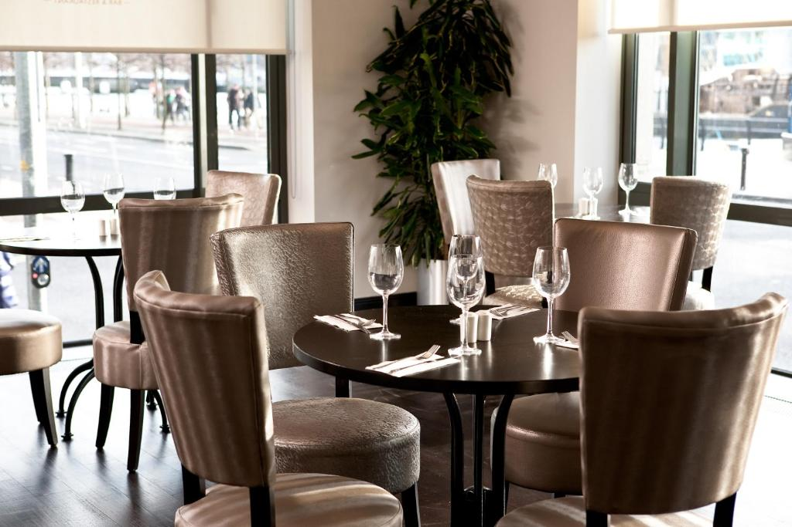
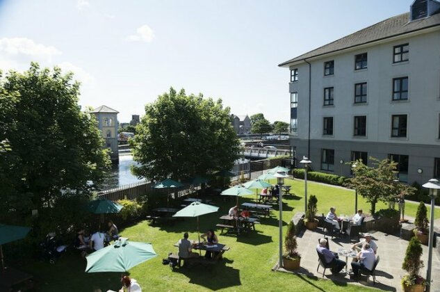
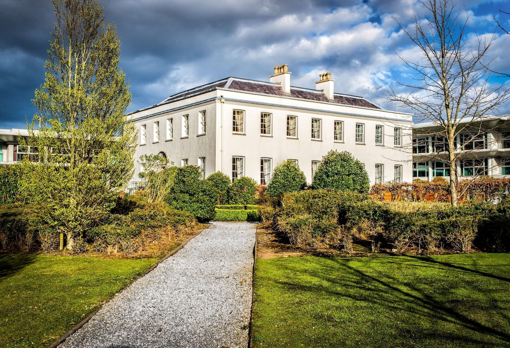

Em Dublin
Hilton Garden Inn Dublin City Centre
Situado em uma área movimentada com vista para o Rio Liffey, este hotel discreto fica a 4 minutos a pé de uma parada de bonde, a menos de 1 km dos shows ao vivo na 3Arena e a 3 km do Castelo de Dublin. O hotel possui restaurante, academia, wifi, bar, estacionamento, um centro de negócios, ar condicionado em todos os quartos, quartos com 1 banheiro. Mais informações e Avaliação.

Voltar Para Cima
Em Galway
Jurys Inn Galway
O hotel se localiza bem próximo ao Rio Corrib e próximo ao calçadão, a restaurantes e lojas. Permite curtir os principais lugares. O hotel possui restaurante, academia, wifi, bar, estacionamento, e cada quarto varia entre 1 a 2 banheiros. Mais informações e Avaliação.

Voltar Para Cima
Em Cork
Radisson Blu Hotel & Spa
Situado em uma área com 4 hectares, este hotel sofisticado fica a 9,6 km do exuberante Parquea Wildlife Park e a 19,3 km do Castelo de Blarney, uma construção medieval. O hotel possui restaurante, academia, wifi, piscina, bar, spá, estacionamento, quarto com 1 banheiro. Mais informações e Avaliação.

Voltar Para Cima